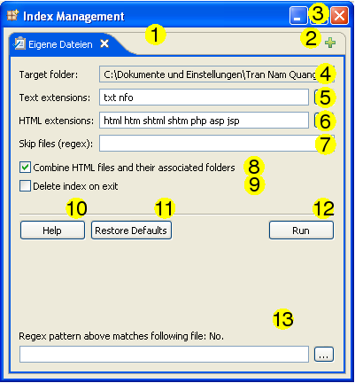

Indexing Options

- Tab bar: Represents a queue of folders to be indexed.
- Add/Remove: You can use the "Add folder to queue" button to add items to the queue and the close buttons on the tabs to remove queue items. Each queue item can be configured separately using the controls below the tab bar.
- Close this window: Clicking on this button will close this window and abort a running indexing process if there is one.
- Target folder: The path of the folder the currently displayed queue item corresponds to.
- Text extensions: The file extensions of the files that should be indexed as plain text, separated by whitespace. Typical values are: c, cpp, log, java, py. In case of a conflict with existing file extensions the user-defined file extensions will be given higher priority. To get a list of available file extensions underneath the current target folder, click on the "..." button.
- HTML extensions: The file extensions of the files that should be indexed as HTML documents. This setting has higher priority than the user-defined text file extensions. To get a list of available file extensions underneath the current target folder, click on the "..." button.
- Skip files: A concatenation of regular expressions. Any file with a filename that matches one of these patterns will be excluded from indexing. To find out if your entered pattern matches a particular file, use the tool described in (12). For more information on regular expressions, see here.
- HTML pairing: Whether to combine HTML files and their associated folders, such as "foo.html" and a folder in the same directory named "foo_files". For more information, see here.
- Delete index on exit: Delete the index files for this folder after program termination. Enabling this allows you to create "temporary indexes", a concept related to this.
- Help: Open this document in a web browser.
- Restore Defaults: Restore the default indexing options.
- Run: This button tells DocFetcher you're done with configuring this queue item and that it is ready for processing. Note that this button only sets the 'run' flag for this particular item, not for other items in the queue.
- Regular expression check: This little tool tells you whether the pattern given in the "Skip files" text box matches the file specified here.